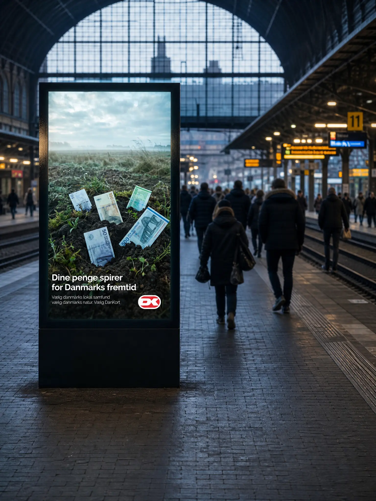
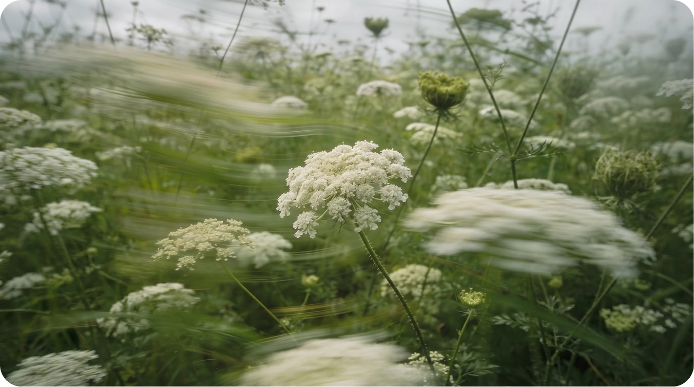
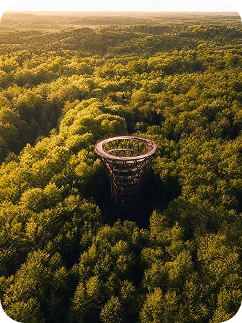
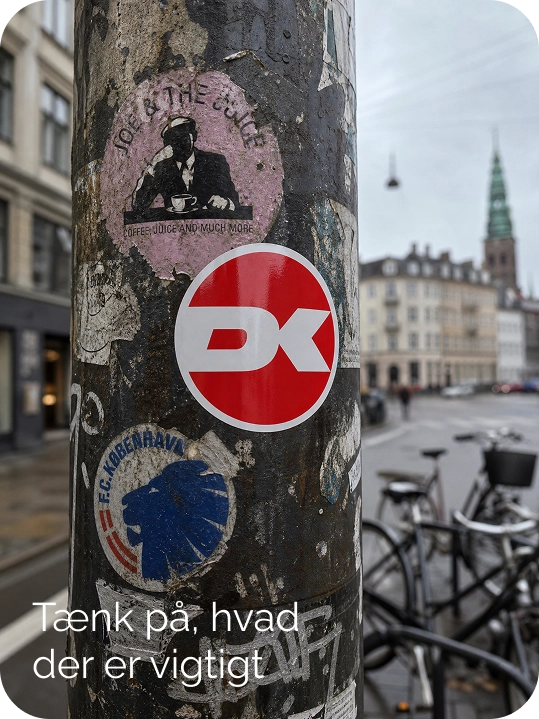
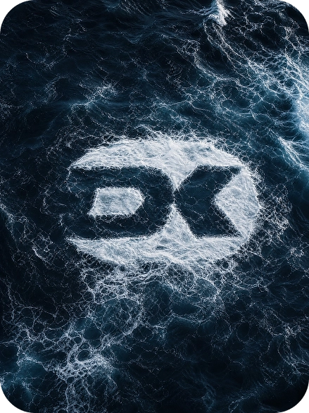
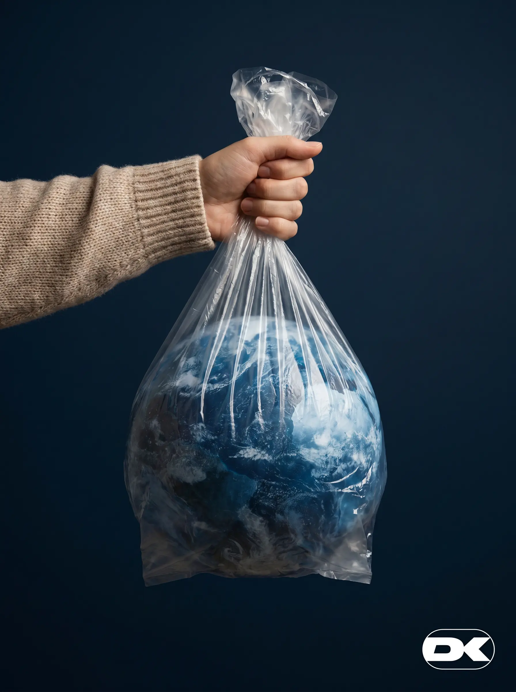
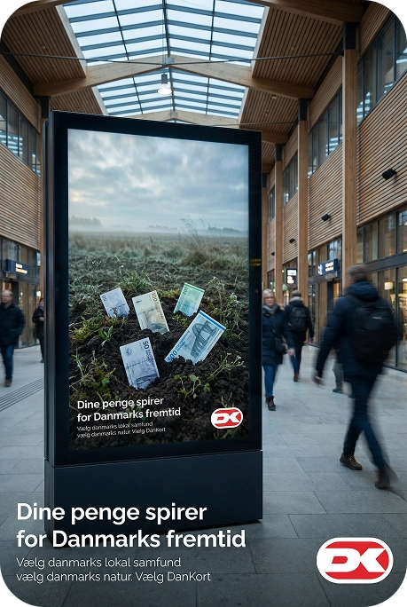
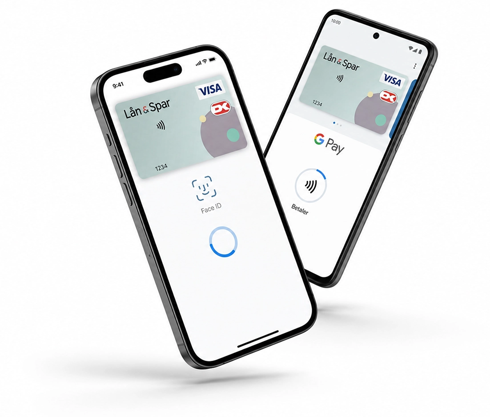

Støt Danmark –
Uden at det koster dig ekstra
Dankort er mere end en betaling, det er en måde at støtte Danmark på.
Når du betaler med Dankort, er du med til at holde flere penge i den danske økonomi, styrke lokale erhvervsdrivende og støtte Den Danske Naturfond gennem Dankort Øremærket. Hver betaling bliver dermed mere end bare en transaktion, den bliver et aktivt valg, der støtter lokalsamfund, natur og en stærkere fremtid for Danmark.
Læs mere om Øremærket




Bygget på danske værdier
DanKort Ekstra er skabt med fokus på fællesskab, bæredygtighed og lokale forbindelser. Når du bruger kortet, er du med til at støtte danske virksomheder og et betalingssystem, der holder mere værdi i Danmark. Samtidig får du adgang til moderne funktioner, personlige kortdesigns og oplevelser, der gør hverdagen lidt mere inspirerende. Et kort designet til en ny generation, der gerne vil have både fleksibilitet og mening i det, de bruger hver dag.


Nemt & Sikker Betaling
Betal hurtigt og sikkert med kort eller mobil.
Støt Danmark
Styrk dansk økonomi med hver betaling.
Dankort Øremærket
Giv noget tilbage til det danske miljø og samfund.
Mere end et kort i din pung
DanKort Ekstra samler betaling, oplevelser og personlig identitet ét sted. Følg dine point, se din bæredygtige impact, støt naturprojekter og brug dine optjente fordele på alt fra koncerter til lokale caféer og events. Kortet er designet til at fungere naturligt med den digitale hverdag — hurtigt, enkelt og elegant — samtidig med at det giver dig mulighed for at være en del af noget større end bare betaling.
Det virker med det, du allerede bruger
Det er muligt for kunder i mere en 40 banker at betale med Dankort i Apple/Google Pay. Når du betaler med mobilen, er det oftest billigere for butikkerne, når du betaler med Dankort
Apple Pay
Google Pay
Mobile Pay
